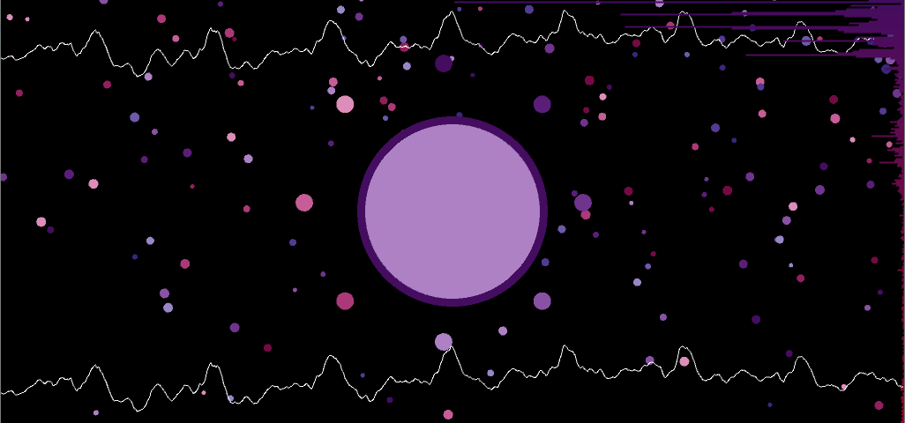

Music Visualizer
I made this music visualizer with Processing. The title, composed of small dots come into focus with the use of Guassian blur.

The dots are placed randomly using an alpha mask of the title generated on startup. The title is disintegrated and the main visualizer is faded in.

The main music visualizer shows the waveform for the song at the top and the bottom as well as a large, stationary dot in the middle which pulsates based on the minim beat detection algorithm.
A spectrograph is also shown on the right and dots move from right to left in the background at different rates to give an illusion of movement. The dots differing size and speed make it look as if the large dot is floating through space.

At the end of the song, the ID3 tags are pulled and information such as the song title, author, album and duration are shown.